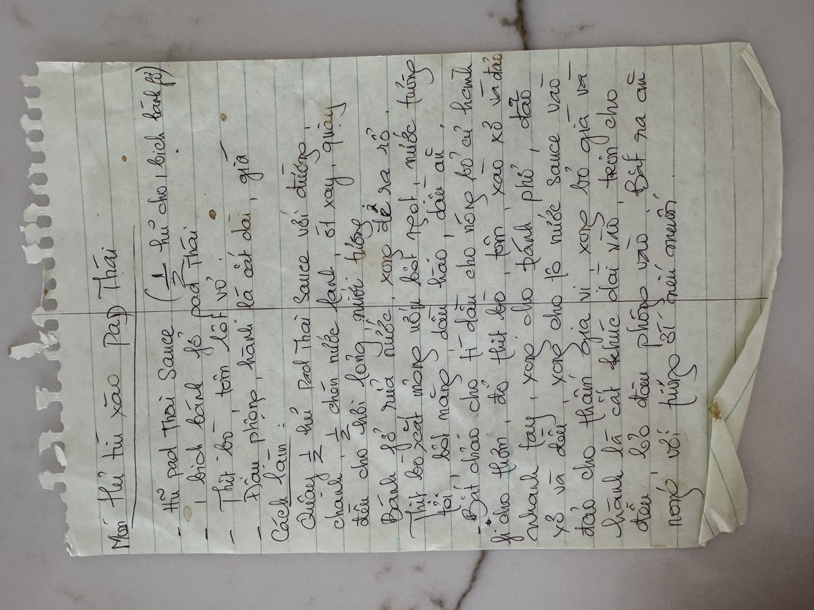
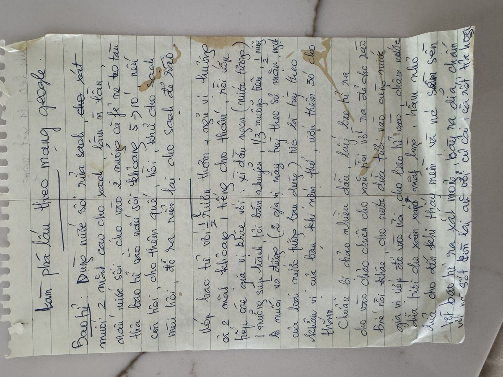
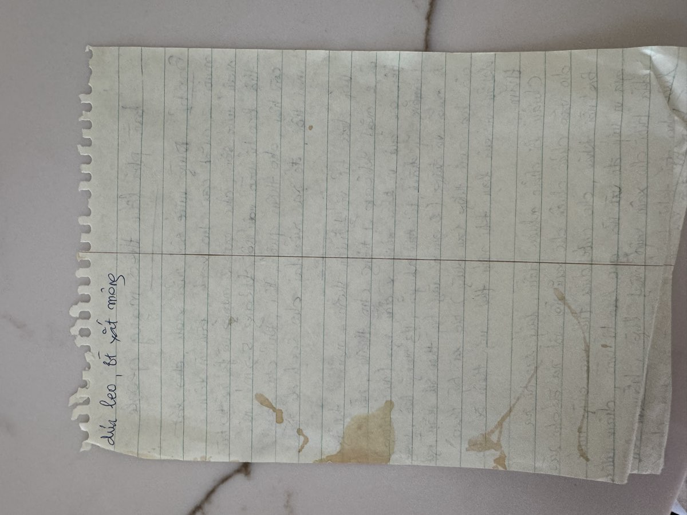

← Back to recipes

Hủ Tiếu Xào Pad Thai
Stir-Fried Pad Thai Noodles
From Mẹ — Oanh
Nguyên liệu · Ingredients
- 1 package Pad Thai rice noodles (or bánh phở khô)
- ½ lb beef, thinly sliced against the grain
- ½ lb shrimp, peeled and deveined
- 2 eggs
- ⅓ cup roasted peanuts, crushed
- 2 stalks green onion, cut into 2-inch pieces
- 2 cups bean sprouts (giá)
- ½ cucumber, sliced
- Fresh chili, sliced (to taste)
- 3 tablespoons cooking oil
- Lime wedges, for serving
Pad Thai Sauce
- 3 tablespoons fish sauce (nước mắm)
- 2 tablespoons soy sauce (nước tương)
- 3 tablespoons sugar
- 2 tablespoons tamarind paste
- 1 tablespoon water
Cách làm · Instructions
- Soak the Pad Thai noodles in warm water for about 20 minutes until pliable but still slightly firm. Drain well — if the noodles are too soft before they hit the wok, they'll turn to mush.
- Mix the Pad Thai sauce: Stir together fish sauce, soy sauce, sugar, tamarind paste, and water until the sugar dissolves. Taste and adjust — Mẹ liked hers on the sweeter side.
- Heat oil in a large wok over high heat. Stir-fry the beef until just seared, about 2 minutes. Remove and set aside.
- In the same wok, stir-fry the shrimp until pink, about 2 minutes. Push to the side. Crack the eggs into the wok and scramble quickly.
- Add the drained noodles to the wok. Pour the sauce over the noodles and toss with tongs, letting the noodles soak up all the sauce. Cook for 2–3 minutes until the noodles are tender and well coated.
- Return the beef to the wok. Add the green onion and toss everything together for another minute.
- Plate the noodles and top with crushed peanuts, fresh bean sprouts, sliced cucumber, and chili. Serve with lime wedges on the side. Mẹ always set out the toppings family-style so everyone could build their own plate.
Công thức gốc · Original handwritten recipe



❦
A recipe from Mẹ's kitchen